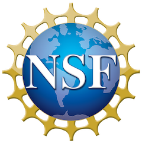

Ferdinando (Nando) Fioretto
Assistant Professor of Computer Science, University of Virginia

307 Rice Hall
85 Engineer's Way
Charlottesville, VA 22904
I am an assistant professor of Computer Science at the University of Virginia.
I lead the Responsible AI for Science and Engineering (RAISE) group where we make advances in artificial intelligence with focus on two key themes:
Foundation Models for Science and Engineering: We develop the foundations to blend predictive and generative models and neuro-symbolic reasoning for complex scientific and engineering problems.
Trustworthy & Assured AI: We analyze the assurance of AI systems in support of decision-making and learning tasks, focusing especially on privacy, safety, and fairness.
My research has been generously supported by various projects from the National Science Foundation, a Google Faculty Research Award, an Amazon Research Award, the LaCross Institute, and the University of Virginia.
For more details, please see my papers and short bio
Opportunities for Undergaduates Students
I regularly accept undergaduates and graduates interns who are willing to work on Responsible AI or Differentiable Optimization topics. See this page for current projects available.
If you are interested in working with us, send me your CV and interests and make sure you check our latest work!
News
| Feb-25 |
- Learning To Solve Differential Equation Constrained Optimization Problems was awarded a Spotlight at ICLR 2025.
Congraulations to Vincenzo!
- Grateful to be awarded the 2025 Fellowship in AI Research from the LaCross Institute for Ethical AI in Business. This fellowship will sponsor a project at the intersection of privacy, fairness, and optimization. - Honored to receive an Outstanding Research Faculty Recongition from the University of Virginia. |
|---|---|
| Jan-25 |
- Our work on Learning To Solve Differential Equation Constrained Optimization Problems was accepted to ICLR 2025. Congraulations to Vincenzo!
- Our work on Speculative Diffusion Decoding: Accelerating Language Generation through Diffusion was accepted to NAACL 2025. Congraulations to Jacob and Michael! - Our work on Differentially Private Data Release on Graphs: Inefficiencies and Unfairness was accepted to AISTATS 2025! With Sen and Juba. - Our work on Fairness Issues and Mitigations in (Differentially Private) Socio-demographic Data Processes was awarded an oral at AAAI 2025! Congratulations to Joon! |
| Dec-24 |
- New preprint: “Multi-Agent Path Finding in Continuous Spaces with Projected Diffusion
Models”. See publications for details. - Several papers accepted at AAAI 2025, main conference and workshops. See publications for details. - Paper accepted to IEEE SatML 2025! - Congratulations to Joon for receiving an honorable mention for the 2025 CRA Outstanding Undergraduate Researcher Award! |
| Nov-24 |
- We are releasing the first chapter of a new book on Differential Privacy:
Differential Privacy Overview and Fundamental Techniques! - I gave a talk on Fairness in constrained ML systems at Ohio State. - I will give a keynote talk on Differential Privacy and Fairness at the S-HPC workshop at the International Conference of Super Computing (SC) |
| Oct-24 |
- New preprint: Learning to Optimize meets Neural-ODE: Real-Time, Stability-Constrained AC OPF! - The Sixth edition of the Privacy Preserving AI workshop is online! - New preprint: End-to-End Optimization and Learning of Fair Court Schedules! - New preprint: Learning To Solve Differential Equation Constrained Optimization Problems! - Four papers accepted at NeurIPS-24 workshops! - I am a member of the chairing committee of the NeurIPS-24 workshop on Algorithmic Fairness through the Lens of Metrics and Evaluation! Hope to seeing you in Vancouver! |
| Sep-24 |
-
Our paper on constraining the outputs of diffusion models (with guarantees!) has been accepted to NeurIPS 2024! |
| Aug-24 |
- New preprint: Speculative Diffusion Decoding: Accelerating Language Generation through Diffusion! - New preprint: Fairness Issues and Mitigations in (Differentially Private) Socio-demographic Data Processes! - New preprint: Differentially Private Data Release on Graphs: Inefficiencies and Unfairness! |
| Jul-24 |
- Our paper Learning Joint Models of Prediction and Optimization has been accepted to ECAI 2024! - Our paper Metric Learning to Accelerate Convergence of Operator Splitting Methods for Differentiable Parametric Programming has been accepted to the CDC 2024! |
| Jun-24 |
- Invited to attended the National Academy of Science and the Royal Society US-UK Scientific Forum: Scinece in the Age of AI.
- Two papers accepted at ICML workshops! |
| May-24 |
- I am co-organizing the first Summer School in AI and OR (AISCORE).
- I gave a talk on Disparate impacts of compression in Machine Learning at BuzzRobot. - Two papers accepted to ICML 2024! On The Fairness Impacts of Hardware Selection in Machine Learning, and Disparate Impact on Group Accuracy of Linearization for Private Inference. |
| Apr-24 |
- Our paper End-to-End Learning for Fair Multiobjective Optimization Under Uncertainty has been accepted to UAI 2024! - I gave a talk on formalizing the principle of data minimization for Machine Learning at the Google Privacy seminar serires. - Our paper Fairness Increases Adversarial Vulnerability has been accepted to IJCAI 2024! - Our paper Learning Fair Ranking Policies via Differentiable Optimization of Ordered Weighted Averages has been accepted to FAccT 2024! - New preprint: Metric Learning to Accelerate Convergence of Operator Splitting Methods for Differentiable Parametric Programming ! |
| Mar-24 |
- New preprint: Learning Constrained Optimization with Deep Augmented Lagrangian Methods! - The fith edition of the Privacy Preserving AI workshop at AAAI-24 has been an exciting event. Check out the website for information about its program! - Check out my piece on Fairness in The conservation. |
| Feb-24 |
-
New preprint: End-to-End Learning for Fair Multiobjective Optimization Under Uncertainty! - New preprint: Projected Generative Diffusion Models for Constraint Satisfaction! - New preprint: Disparate Impact on Group Accuracy of Linearization for Private Inference! - New preprint: Learning Fair Ranking Policies via Differentiable Optimization of Ordered Weighted Averages! - I gave a talk at Amazon Science on the disparate impacts of private machine learning. |
| Jan-24 |
-
New preprint: Analyzing and Enhancing the Backward-Pass Convergence of Unrolled Optimization! |
| Dec-23 |
- Paper accepted to AAAI 2024! - New preprint: On The Fairness Impacts of Hardware Selection in Machine Learning! - |
| Nov-23 |
-
New preprint on integrating prediction and optimization via proxy learning! - - Our paper on disparate impacts arising in energy optimization has been accepted to the NeurIPS 2023 Climate Change AI Workshop! |
| Oct-23 |
-
|
| Sep-23 |
-
Our paper on data minimization at inference time has been accepted to NeurIPS 2023! - I am co-organizing the fith edition of the Privacy Preserving AI workshop at AAAI-24. - Paper accepted in IEEE PES Innovative Smart Grid Technologies. |
| Aug-23 |
- I gave a talk on Privacy and Fairness at the IJCAI-23 workshop on Deep Learning Methods for Social Media.
- New survey on integrating prediction and optimization in end-to-end differentiable systems! - I am co-organizing the Algorithimc Fairness through the Lens of Time workshop at NeurIPS to spark discussions on how a long-term perspective can help build more trustworthy algorithms in the era of generative models. - New preprint on the disparate impacts arising in energy optimization. - |
| Jul-23 |
- I gave a talk about the integration of Machine Learning and Optimization at the 2023 ACP Summer School.
|
Selected Talks
| Google TechTalks (May 24) | BuzzRobot (Apr 24) | Toc 4 Fairness Seminar (Nov 23) | ACP Summer School 2023 (Aug 23) | DTU Summer School 2023 (Jun 23) | FAccT 2022 Tutorial (June 22) | CP 2021 Invited Talk (Nov 21) | ACP Early Career Award (Dec 21) |
Research sponsors
Our group is grateful for the generous support from our sponsors:|  |